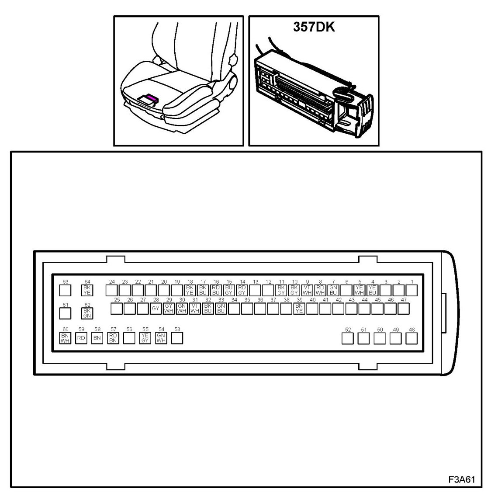
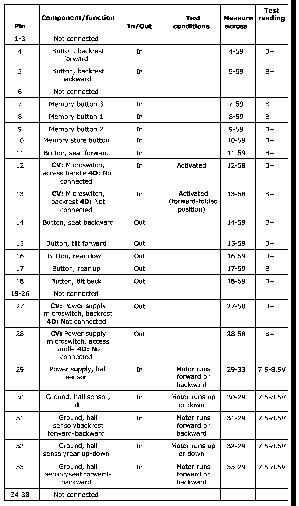
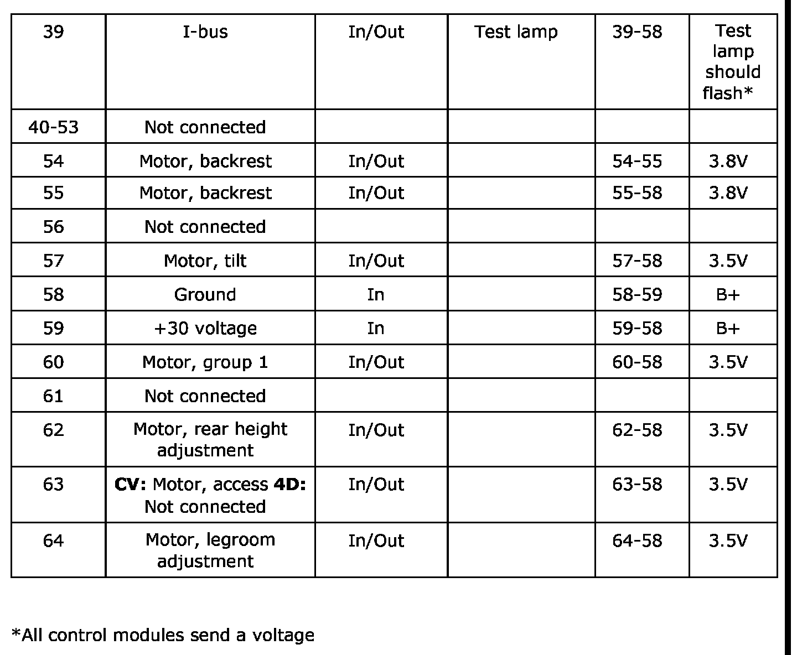

Power Seat Control Module: Testing and Inspection
Measurement Value, Control Module Connections, Seat Control Module (357k/Dk)
The following pages contain instructions and readings for testing the control module.
Remember:
- Observe the test criteria. Use common sense when assessing the test results.
- The specified test readings are with the ignition ON, unless otherwise stated.
- Check these points:
- First check that the control module is supplied with current and is grounded.
- Then check all sensor inputs and signals from other systems.
- Finally, check the control module outputs. Remember that the test readings do not indicate whether the actuator is working.
- If any reading is not OK, consult the wiring diagram to trace the leads, connectors or components which should be checked more thoroughly.
- The test readings given apply to a calibrated Fluke 88/97.
- The test readings show the signal pulse condition or pulse length. A test instrument with pulse rate or width measurement must be used.
NOTE: All units on the I and P-buses send signals.
64-pin connector
Number of connector pins 4


